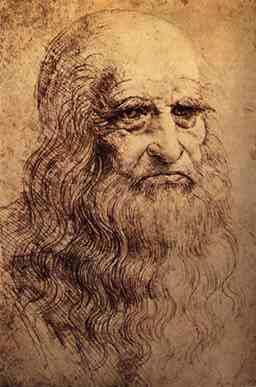
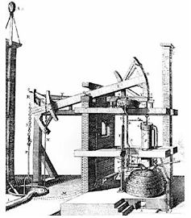
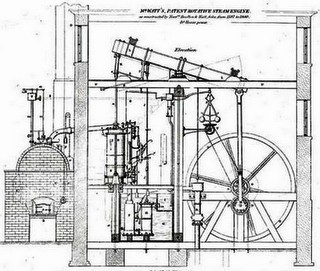

7. La Edad Moderna.
La Edad Moderna es el periodo de los grandes descubrimientos geográficos, consecuencia del avance de la industria naval y de las nuevas técnicas de orientación. España y Portugal se sitúan a la cabeza de estas empresas, de las que obtuvieron importantes beneficios económicos y territoriales. Al mismo tiempo, durante el Renacimiento (con figuras como Miguel Ángel, Leonardo da Vinci, Galileo, y Copérnico), y posteriormente con la Ilustración, se sientan las bases del pensamiento del mundo moderno, en el que el hombre se convierte en el centro del universo, y se aplica la razón a todas las formas de conocimiento, perdiendo la religión su papel preponderante de la Edad Media. Este periodo culmina con los establecimientos coloniales de ultramar (África, América, Australia...) y la Revolución Francesa, que instaurará un nuevo orden político y social.
OBJETOS TÉCNICOS Y TECNOLOGÍAS INCORPORADAS
- Leonardo da Vinci (1452-1519).
Leonardo da Vinci fue pintor, escultor, ingeniero, arquitecto, físico, biólogo, filósofo, geómetra, botánico, modisto, inventor de juegos de salón y de utensilios de cocina, cartógrafo, autor de tratados de óptica, diseñador de jardines, decorador de interiores, urbanista, fundidor... Y en cada una de estas facetas sus capacidades asombraron a sus contemporáneos. Posiblemente no haya en la historia de la Humanidad un hombre con un historial tan completo.
Previó el principio de inercia, que después demostró Galileo. Vio la imposibilidad del "movimiento continuo".
Resucitó Leonardo las ideas de Arquímedes sobre la presión de los fluidos y demostró que los líquidos mantienen el mismo nivel en vasos comunicantes, y que si se llenan ambos vasos con líquidos diferentes, sus alturas de nivel serán inversamente proporcionales a sus densidades.
También estudió la hidrodinámica: escape de agua por orificios, su corriente por canal, propagación de las olas sobre superficies, etc. De las olas en el agua pasó a las ondas del aire y a las leyes del sonido, adelantándose a la moderna teoría ondulatoria de la luz. En astronomía concibió una máquina celeste ajustada a determinadas leyes.
Leonardo estudió a fondo la anatomía humana y la mecánica del vuelo de las aves.
En urbanismo, realizó un plano del sistema de desagües de una ciudad, y la construcción de esta en dos niveles: uno para peatones y otro para vehículos. En esta ciudad realiza investigaciones sobre edificios, e incluye estudios concretos sobre el sistema de escaleras o instalaciones de calefacción.
Intentó mejorar el reloj y el higrómetro (para medir la humedad de la atmósfera).
Como ingeniero, se atribuyen muchos inventos a Leonardo, desde un diseño para la fabricación de un helicóptero, un paracaídas o un vehículo automóvil hasta el común rallador de pan, pasando por una práctica sierra para mármol, una máquina para fabricar maromas, modernas puertas de batientes para las esclusas, máquinas para tallar tornillos y limas; máquinas de guerra como el carro blindado, submarinos o los trajes para buzos; una máquina para pulir espejos, fusiles de repetición.
Ideó también una grúa móvil, un molino de aire caliente y una excavadora flotante pretendía conseguir que los ríos fuesen navegables. Sin embargo, ninguno de estos inventos pasó del estadio del diseño, ni fue utilizado, dado que eran muy avanzados para su época.
- Fusión entre Ciencia y Técnica.
Poco a poco, la Ciencia se aleja de lo religioso, y se fundamenta el método científico. Los nuevos descubrimientos científicos comienzan a generar nuevos instrumentos técnicos, los cuales, a su vez, son utilizados por la Ciencia para proporcionar nuevos descubrimientos. Ejemplos de esta colaboración son el telescopio (Galileo, 1610), el microscopio (Malpighi, 1666), el péndulo cicloidal (Huygens, 1673), el barómetro (Torricelli, 1660), etc.
- Benjamin Franklin (mediados del siglo XVIII), que fuera también presidente de los Estados Unidos, fue un prolífico inventor. A él le debemos, entre otros, el pararrayos, las gafas bifocales, la estufa que lleva su nombre, las aletas de nadador y el cuentakilómetros.
- Máquina de vapor: En la máquina de vapor se produce la transformación de energía calorífica en energía cinética (mecánica), pudiéndose emplear ésta para propulsar barcos, trenes, mecanismos de diferentes máquinas...etc. Es una máquina que se llama de combustión externa, ya que la quema de combustible se produce fuera de ella.
La primera máquina de vapor, obra de Thomas Newcomen, data del año 1712, y se empleaba para achicar agua de las minas de carbón. Entre 1765 y 1784, el ingeniero escocés James Watt perfeccionó dicha máquina,, introduciendo el condensador externo y el regulador centrífugo, que aumentaron su seguridad y eficacia.
La aplicación de una máquina de vapor estable provoca la aparición de numerosos inventos:
Richard Trevithick utilizó una máquina de vapor para mover una locomotora de un tren (1804).
En 1803, Robert Fulton construyó un barco a vapor, y tres años más tarde contruiría otro empleando la máquina de Watt, que sería el primer barco a vapor comercial.
En 1829, George Stephenson, diseñó la locomotora Rocket, que transportaba cargamento y pasajeros a una velocidad superior a la conseguida hasta aquel momento. Dirigió la construcción de la primera vía férrea pública del mundo (Stockton-Darlington, 1821-1825). La importancia de la máquina de vapor fue de tal magnitud que condujo, primero a Inglaterra, y luego al resto de Europa a la primera Revolución Industrial. Su aplicación en todo tipo de máquinas industriales se tradujo en grandes avances, ya que por primera vez se podía prescindir de la energía de las personas o animales para realizar tareas. En España, la primera línea férrea se inauguró entre Barcelona y Mataró, en 1848.
Podemos decir, pues, que la máquina de vapor daría lugar a una mejora en las comunicaciones, pudiéndose transportar mayores cargas a unas distancias impensables hasta la fecha. Así mismo, con el tiempo se introduciría en ciertas máquinas (hiladoras, tejedoras, etc.), que darían lugar a las primeras automatizaciones de procesos.
Obra publicada con Licencia Creative Commons Reconocimiento No comercial Compartir igual 4.0